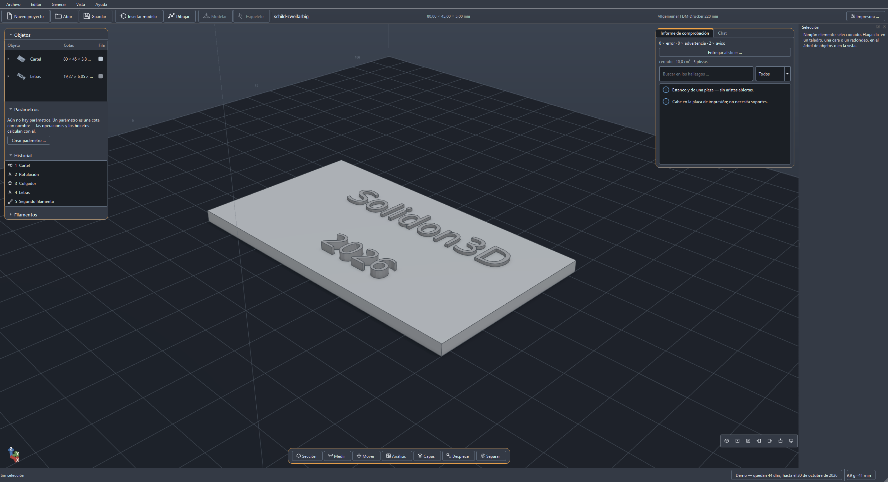
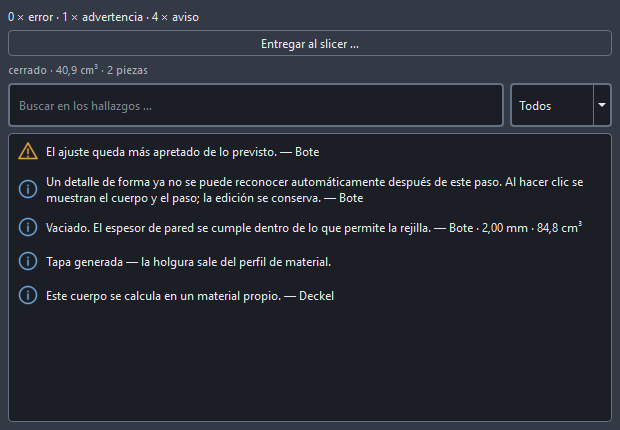
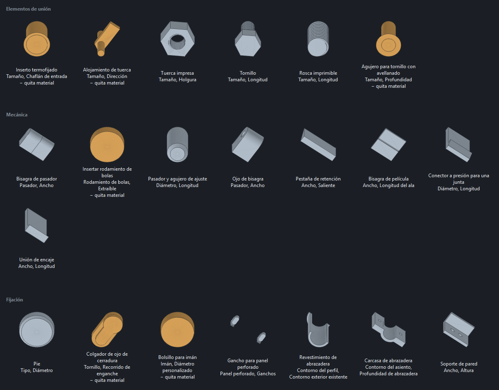

La pieza que descargaste no encaja. Haz que encaje.
Arrastra el STL, haz un taladro, añade una tapa, el ajuste sale del perfil de material — y antes de pasar por el slicer, el informe de comprobación ya dice qué saldrá mal al imprimir. Solidon3D edita modelos ajenos, construye los propios y prepara los generados. Local, sin cuenta, sin suscripción; un agente de IA maneja las mismas herramientas que los menús, y la geometría la calcula el código, nunca el modelo de lenguaje.
Completa y sin clave: sin marcas de agua, sin bloqueo de exportación, sin funciones recortadas. Funciona hasta el 30 de octubre de 2026 y después ya no arranca — tus archivos de proyecto no se ven afectados.
Avísame cuando salgaWindows muestra un aviso azul con una aplicación nueva y aún sin firmar: Más información → Ejecutar de todas formas. La firma llegará en cuanto esté el certificado.
- Funciona sin conexión
- Sin cuenta
- Sin telemetría
- Tus archivos siguen siendo tuyos
- Windows, macOS, Linux

¿Te suena?
Las cuatro frases que más se oyen al imprimir — y qué hace Solidon3D con ellas.
-
El agujero es 0,2 mm demasiado pequeño y no tengo CAD.
Haz clic en la cara, cambia la cota. También en un STL ajeno — taladros, bolsillos y espesores de pared son características con nombre, no una nube de triángulos.
-
La impresión se interrumpió al 80 %, por una isla.
El análisis de capas la enseña antes. Voladizos, islas, paredes demasiado finas y la necesidad de soportes — antes de que el slicer gaste el tiempo.
-
La tapa se atasca. Al tercer intento encajó.
Ajustes del perfil de material. Holgura, ajuste a presión o a ras se deducen de una escalera de calibración impresa una sola vez, no se estiman.
-
La pieza es 40 mm demasiado grande para la cama.
Dividir y poner pasadores en un solo paso. Dividir automáticamente crea a la vez los pasadores, los taladros y los ajustes correspondientes.
Cuatro caminos hacia la pieza
Los cuatro acaban en la misma escena, el mismo historial y el mismo informe de comprobación. Tú decides por pieza, no por programa.
Modificar un modelo ajeno
Suelta el archivo — o arrastra el enlace de MakerWorld, Printables o Thingiverse directamente del navegador a la ventana, sin pasar por la carpeta de descargas. Lee el informe de comprobación, haz clic en una cara o un taladro — y di en el chat qué debe pasar, o elige en el menú contextual. Compara el antes y el después, aplica, exporta.
Construir de cero, con cotas
Describe lo que necesitas. El agente crea parámetros y coloca bloques probados — roscas, insertos a presión, bisagras. Mueve los números y el modelo sigue al instante.
A partir de texto o imagen
Una malla generada pasa automáticamente por la cadena de reparación, se lleva a una resolución con la que se puede trabajar, recibe un informe de comprobación y, si hace falta, se divide y recibe pasadores — hasta que queda imprimible sobre la placa. Necesita un ComfyUI en local con un modelo generador y una tarjeta gráfica potente; sin ambos, los caminos 1 y 2 siguen siendo plenamente utilizables.
Figuras a mano
Algunas formas no se pueden acotar. Monta los cuerpos básicos a grandes rasgos, fusiónalos suavemente, remalla de manera uniforme — y modela después con seis pinceles. Todo el proceso queda como un paso en el historial, y por tanto modificable.
Lo que ningún programa de esculpido puede hacer: mientras modelas, el espesor de pared se calcula en paralelo. Las zonas demasiado finas aparecen como un número en la barra — no en el slicer, cuando la forma ya está terminada.
Lo que marca la diferencia
Seis de doce funciones, cada una en una frase — todas con imágenes en la página de funciones.


- Un agente de IA que no adivina. Una frase en el chat se convierte en una propuesta que un solo deshacer retira por completo. La geometría la calcula el código, nunca el modelo de lenguaje — y eso está medido: una batería de 39 peticiones de referencia se ejecuta contra cada cambio del agente.
- Informe de comprobación antes de imprimir. Zonas abiertas, normales invertidas, paredes por debajo de dos cordones — cada hallazgo salta a su lugar en el modelo y lleva consigo una propuesta de acción.
- Cambiar un número en lugar de reconstruir. El historial es no destructivo: espesor de pared de 2,40 a 3,60, y el vaciado, la tapa, los taladros y los ajustes se recalculan.
- Diecisiete bloques probados. Alojamiento de tuerca, rosca, inserto termofijado, bisagra de película — las medidas salen de una tabla de piezas normalizadas, no de la intuición.
- Análisis de capas sin slicer. Voladizos, islas, luces de puente y volumen de soportes; la búsqueda de orientación propone la posición que menos genera de todo ello.
- Bocetos con restricciones. Diez restricciones mantienen unido el dibujo, y el contorno entra en el núcleo B-Rep como curva exacta — un círculo se convierte en un cilindro, no en un polígono.
Cuando el modelo viene de una IA
Un generador comprueba si la malla está cerrada. Lo que no comprueba es si la pared es más gruesa que tu boquilla, si un voladizo aguanta, si una isla empieza en el aire ni si el conjunto cabe en tu placa de impresión. Justo ahí empieza Solidon3D — y después cada número aún se puede cambiar.

Gárgola 
Farol 
Válvula industrial 
Cráneo de dragón
Cuatro de ellos a partir de una sola frase cada uno, generados y comprobados en Solidon3D — todos cerrados y de una sola pieza, unos veinte segundos cada uno. El generador se ejecuta en tu propio equipo: sin cuenta, sin subida, y el modelo que hay detrás tiene licencia MIT.
Del generador a la impresiónLo que Solidon3D no es
- No es un slicer. Solidon3D analiza y prepara; el archivo de impresión lo sigue generando tu slicer — Solidon3D se lo entrega directamente y lee de vuelta su G-code como contraprueba.
- No es un CAD en la nube. Sin cuentas, sin almacenamiento en la red, sin telemetría. Los proyectos son archivos en tu ordenador.
- Sin garantía de cotas en mallas generadas. Lo que nace de texto o imagen se hace imprimible — lo fiel a la cota se construye por los caminos 1 y 2.
- La IA trae sus propios costes. El chat funciona con tu propia clave de API — el uso del modelo lo factura el proveedor, lo típico son céntimos por propuesta. Gratis sale en local con Ollama; un modelo capaz (a partir de unos 14 000 millones de parámetros) necesita para ello una tarjeta gráfica con 16 GB de memoria.
Primero la demo, luego una única compra
Hasta el 30 de octubre, Solidon3D no cuesta nada. Después, una compra única — sin suscripción, sin cuenta, sin funciones que dejen de funcionar a los doce meses.
Completa, sin clave, sin cuenta. La versión completa llegará por 69 € — pago único, con todas las actualizaciones 1.x incluidas. El precio de lanzamiento vale hasta el 31/01/2027; después son 99 €.
Avísame cuando salga- La demo no está recortada. Sin marcas de agua, sin bloqueo de exportación, sin funciones cerradas — tiene una fecha de fin y nada más.
- Una vez, no cada mes. Los servicios de IA con los que hoy se anuncia el 3D cobran por suscripción — lo habitual son de 20 a 30 $ al mes, es decir, de 240 a 360 $ al año, y al cancelar se acaba el acceso. Aquí son 69 €, una vez. A eso se suma lo que cueste el modelo de lenguaje si usas el chat; en local con Ollama, eso tampoco cuesta nada. (Precios de terceros a fecha de 12/08/2026, sin garantía.)
- Una licencia, todos tus ordenadores. Va ligada a ti, no a un aparato — puesto de trabajo, portátil, ordenador del taller.
- Sin activación por la red, sin cuenta. La clave se comprueba en tu ordenador. Nosotros no sabemos cuándo ni dónde trabajas.
- Uso comercial incluido. Lo que creas es tuyo — véndelo, publícalo, licéncialo. También con bloques de la biblioteca.
- Tus proyectos siguen siendo legibles. Un archivo ZIP con JSON dentro; exportación a STL, 3MF, OBJ, PLY y STEP.
- Se decide antes de comprar. Primero la demo; con la versión completa, catorce días de prueba y el pago después. A eso se añade el derecho legal de desistimiento — quien quiera canjear la clave de inmediato renuncia a él, como en cualquier compra digital.
Requisitos del sistema
| Sistema operativo | Windows 10/11 (64 bits), macOS 12 o más reciente, o Linux — en el Mac, por separado para Apple Silicon y para Intel. La versión para Mac aún no está firmada por Apple: en el primer arranque, haz clic con el botón derecho en la aplicación una vez y elige «Abrir»; después arranca como cualquier otra. |
| Espacio en disco | unos 750 MB instalada, descarga de unos 255 MB |
| Chat (opcional) | clave de API propia (coste corriente con el proveedor) u Ollama con un modelo a partir de unos 14 000 millones de parámetros — eso requiere una tarjeta gráfica con 16 GB de memoria |
| Generar (opcional) | un ComfyUI en local con modelo generador y una tarjeta gráfica potente |
| Otros (opcional) | OpenSCAD, un slicer — todo se encuentra solo o se indica, nada de ello es obligatorio |
Preguntas frecuentes
¿Qué pasa el 30 de octubre?
A partir del 31 de octubre la demo ya no arranca. Lo avisa antes: en la barra de estado se lee cada día cuánto le queda.
Tus archivos no se ven afectados. Se quedan donde los guardaste; no se borra nada y nada se vuelve ilegible. Un archivo de proyecto es un archivo ZIP con JSON dentro y se puede abrir también sin Solidon3D — la siguiente versión lo lee sin cambios.
¿Por qué una demo con fecha de fin en vez de un periodo de prueba?
Porque así puede ser completa. Una versión que a los catorce días se convierte en un visor enseña menos en el segundo proyecto que en el primero. Esta lo enseña todo hasta el último día — y entonces termina, en lugar de seguir viviendo como media aplicación que ya nadie mantiene.
¿Necesito experiencia con CAD?
No. Al camino 1 le basta con hacer clic y una frase en el chat; al camino 2, con describir y mover números. Quien quiera dibujar bocetos con restricciones, puede — pero no tiene por qué.
¿Tengo que usar una IA?
No. El chat es uno de cuatro caminos. Sin clave y sin Ollama, todo salvo el chat sigue siendo plenamente utilizable — menús, menús contextuales, línea de comandos y las 86 operaciones.
¿La IA calcula mi geometría?
No, y esa es la frase más importante de esta página. El modelo de lenguaje elige operaciones y parámetros — toda la geometría la calcula el código. Cada propuesta del agente es exactamente una transacción, que un solo deshacer retira por completo.
¿Puedo manejar Solidon3D desde Claude Code u otra herramienta de IA?
Sí. Solidon3D lleva un servidor MCP integrado: un programa como Claude Code llama con él a las mismas operaciones que figuran en los menús. Está desactivado de serie, solo acepta conexiones del propio ordenador (127.0.0.1), no acepta ni rutas de archivo ni código fuente del exterior — y cada llamada remota es una transacción en el historial, que un solo deshacer retira por completo.
¿Mis modelos van a alguna parte?
Solo si usas el chat con una clave de API ajena — entonces la ficha de la escena va a ese proveedor: los objetos con sus cotas, los nombres de las características, los parámetros y el historial en versión breve. Ninguna geometría, ningún archivo. Con Ollama, también eso se queda en local. Sin chat, nada sale del ordenador: sin cuentas, sin almacenamiento en la red, sin telemetría. La excepción es lo que envías tú mismo: un comentario al soporte, cuyo contenido ves antes en una vista previa.
¿Qué formatos lee y escribe Solidon3D?
Lee STL, 3MF (también como ensamblaje), OBJ y GLB, además de
STEP a través del núcleo B-Rep. Escribe STL, 3MF — con cambio de
color y distribución en placas —, OBJ, PLY, GLB y STEP; STEP
aparece en el diálogo de exportación en cuanto un cuerpo puede
llevarlo. GLB es el formato para enseñar: los colores y el nombre
viajan con él, y quien lo recibe gira la pieza en el navegador. Un
proyecto es un archivo ZIP con project.json dentro:
se abre incluso sin Solidon3D.
¿Funciona en un Mac?
Sí, para Apple Silicon y para Intel como versiones separadas — un paquete compilado en arm64 no arranca en un Mac con Intel, y eso afecta a todos los equipos anteriores a 2020. Aún no está firmado por Apple, y Gatekeeper no deja arrancar con doble clic una aplicación sin firmar bajada de la red: haz clic con el botón derecho en la aplicación una vez y elige «Abrir»; después arranca como cualquier otra. La notarización llegará en cuanto esté la cuenta de Apple.
¿Funciona con mi impresora?
Dieciséis perfiles vienen de fábrica, entre ellos Elegoo, Bambu Lab, Prusa, Creality, Anycubic y Sovol. Se pueden crear propios — hacen falta el volumen de impresión, la boquilla y la altura de capa. Para los ajustes se añade una calibración, una sola vez.
¿Qué pasa después de la versión 1.x?
Todas las actualizaciones 1.x están incluidas en la compra. Una versión mayor posterior sería una compra nueva — tu versión comprada sigue funcionando, no deja de hacerlo, y tus proyectos siguen siendo legibles.
La próxima pieza que encaja
La demo sale el 20 de agosto de 2026 y funciona hasta el 30 de octubre — gratuita y completa. Quien escriba una línea recibirá aviso en cuanto esté: responde una persona.
support@solidon3d.de Leer antes el manual